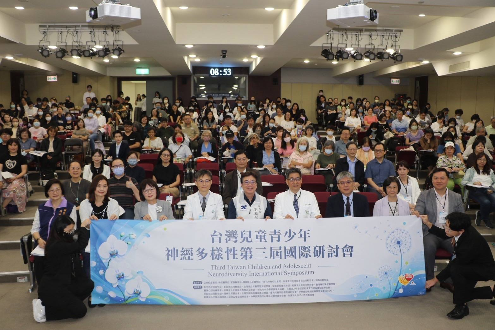

學障、自閉症與情障 合占身障學生近六成
國教盟：看見孩子，更要看懂需求，融合教育支持不能缺席

立法院教育及文化委員會今（21）日聽取普特融合教育政策與現場支持體系專題報告。國教行動聯盟（簡稱「國教盟」）呼籲：普特融合教育要落實不能只看安置人數與補助目標，更要回答：孩子需要的支持，由誰提供？尚未到位的，由誰負責、何時補足？
國教盟家長部長鍾君偉表示：「融合教育不只是讓孩子進入教室，更要讓支持進入教室。支持有特殊需求的孩子，與讓老師得到支持來教好全班，不是二選一；政府應補足教學與人力支持，不能讓資源不足變成親師或孩子之間的對立。」
教育部《114年度特殊教育統計年報》表8顯示，113學年度高級中等以下（含學前）身心障礙學生144,922人，其中學習障礙、自閉症、情緒行為障礙三類合計82,072人（國教盟依表8加總），占近六成（56.63%，國教盟試算、已鑑定人數）；104學年度三類合計占45.82%，至113學年度提高至56.63%，增加10.81個百分點（國教盟試算），顯示已鑑定身心障礙學生的障礙類別組成出現變化。
王瀚陽指出許多孩子的學習、溝通、情緒調節及生活適應困難，不一定能從外表直接察覺，這也是社會常說的「隱性障礙」。神經多樣性的觀點則提醒我們，每個孩子理解世界、處理資訊及與人互動的方式不盡相同。尊重差異，不代表忽略困難；融合教育不只是接納不同的孩子，更要理解不同的學習與支持需求，透過課程調整、教師合作及專業協助，讓孩子真正參與學習。
國教盟主張（兒少十大承諾書第五項），等待鑑定期間，地方政府應依需求先提供教學調整、班級支持與家長諮詢；並推動通用設計學習（Universal Design for Learning, UDL），讓課程從設計之初就考量不同學習需要，而非等孩子適應困難才補救。
在班級支持上，現行辦法要求校長協調人力與專業協助；提供支持後，仍認有必要減少普通班學生人數者，得報主管機關經鑑輔會評估。國教盟要求教育部彙整113、114學年度各主管機關的提報數、核定數、實際執行情形及未核定理由，同時交代特教教學、專業團隊與教師合作如何到位，不能只以法規已有措施作答。
助理人力也不能只看增聘目標。國教署6月29日表示，至116學年度補助縣市進用月薪制學生助理人員可達1,600名；這是補助目標，不能當成實際到職數。年報另載，113學年度直轄市及縣（市）助理員共14,241人（含教師助理員4,962人、特殊教育學生助理員9,279人），屬統計現況，與補助目標口徑不同，不可互算。教育部今（21）日向委員會提出的書面報告稱，114學年度全國特教助理人員14,655名（含專案月薪制800名），仍未說明分年核定、實際到職與服務時數。國教盟肯定穩定人力的方向，但要求教育部公開分年核定、實際到職與服務時數，以及聘不到人、離職後的替補安排。王瀚陽說：「核定之後若沒有人到場，對孩子而言，支持仍未到位。」
支持更要從入學前銜接。衛生福利部統計資料顯示，疑似發展遲緩兒童年度通報個案數，從104年的20,658人增至114年的45,892人，增幅約122.2%。這反映通報數量的變化，不能直接視為發展遲緩發生率的增幅。《特殊教育法》已規範轉銜與家庭支持服務。國教盟呼籲教育部會同衛福部及地方政府，說明接受早期療育的孩子進入幼兒園、國小時，由誰協調教育支持，並讓尚未完成鑑定的家庭知道可以向誰諮詢。早療到入學，不應讓家長重新摸索、各自奔走。
《特殊教育法施行細則》第7條第3項要求各級主管機關應建置融合教育行動方案及示例。國教盟要求教育部進一步說明既有計畫如何落實法規，公開執行進度，並以實際服務與學習參與檢驗成效，而非只列計畫名稱。
國教盟建議以此次專題報告為起點，教育部兩週內向委員會提供既有計畫、指引、示例與成效指標進度；兩個月內提出支持需求、核定與實際到位的缺口盤點及改善安排；下學期由教育部公布首次追蹤結果。王瀚陽強調：「我們不是要求多一本計畫，而是讓孩子得到支持、老師有條件教學、家長找得到協助；每一項缺口，都要有人負責、提出期限。」
新聞聯絡人：
- 國教行動聯盟理事長 王瀚陽 0983-097-165
- 官網：aabe.org.tw
口徑說明（供記者查證）
- 近六成：113學年度高級中等以下（含學前）身心障礙學生144,922人中，學習障礙46,754人、自閉症24,906人、情緒行為障礙10,412人，合計82,072人，占56.63%；不含資賦優異學生。三類合計與占比為國教盟依《114年度特殊教育統計年報》表8試算，是已完成鑑定的人數，不代表三類孩子的實際人數。
- 45.82%：104學年度數字出自《105年度特殊教育統計年報》，與113學年度屬同一年報系列、同一統計範圍，但兩年基準日可能不同；占比為國教盟試算。
- 14,241人：助理員14,241人（113學年度統計現況）與月薪制學生助理人員1,600名（至116學年度補助目標）口徑不同，不可相除或相比。
- 14,655名：教育部2026年10月21日書面報告所載114學年度全國特教助理人員數（含專案增置月薪制學生助理員800名），與年報113學年度14,241人年度與口徑不同，不可相減。
- 122.2%：早療通報是疑似發展遲緩兒童通報個案數（20,658與45,892皆為表內總計，含「6歲以上」組），不是確診，也不是身心障礙學生人數，不可與學生數相加或相除；增幅為國教盟試算。104年原表附註桃園市當年辦理幼兒健檢，疑似個案通報增加，基期可能偏高；增幅方向不受影響。
- 減少班級人數的提報與核定、月薪制助理人員分年到職數與服務時數，國教盟查閱已公開的特殊教育統計年報，未見全國統計，故本稿只提出公開要求，不推估數字。
參考資料｜供媒體查證
- 立法院教育及文化委員會（2026年10月16日）。〈第11屆第6會期教育及文化委員會第3次全體委員會議：從共融到共榮：我國普特融合教育政策推動與教育現場支持體系之檢討〉。立法院議事暨公報資訊網。
https://ppg.ly.gov.tw/ppg/sittings/2026101534/details?meetingDate=115/10/21 - 教育部（2025）。《114年度特殊教育統計年報》（表8，印刷頁19；助理員人數，印刷頁145）。
https://tp-adapt.set.edu.tw/book_ul/7/1951/114年度特殊教育統計年報.pdf - 教育部（2016）。《105年度特殊教育統計年報》（高級中等以下各教育階段特殊教育學生總人數統計概況，印刷頁56）。特殊教育統計查詢網。
https://stastic.set.edu.tw/YearBookFY105/ - 《特殊教育法》（2023年6月21日修正）第36條、第52條。全國法規資料庫。
https://law.moj.gov.tw/LawClass/LawAll.aspx?pcode=H0080027 - 《特殊教育法施行細則》（2023年12月20日修正）第7條第3項。全國法規資料庫。
https://law.moj.gov.tw/LawClass/LawAll.aspx?pcode=H0080032 - 《高級中等以下學校身心障礙學生就讀普通班調整班級人數或提供人力資源及協助辦法》（2023年12月20日修正）第3條、第4條。全國法規資料庫。
https://law.moj.gov.tw/LawClass/LawAll.aspx?pcode=H0060039 - 教育部國民及學前教育署（2026年6月29日）。〈教育部115學年度補助縣市增置月薪學生助理人員400名 穩定特教現場支持人力〉〔新聞稿〕。教育部。
https://www.edu.tw/News_Content.aspx?n=9E7AC85F1954DDA8&sms=169B8E91BB75571F&s=F2282EC53C5C7BDC - 衛生福利部統計處（資料來源：社會及家庭署）（2026年8月31日更新）。〈發展遲緩兒童早期療育服務個案通報概況〉〔資料表〕。衛生福利部。2026年10月19日擷取。
https://www.mohw.gov.tw/dl-22258-cd347bc1-efc1-46c5-b953-ae34795427a3.html - 國教行動聯盟等民間團體（2026年10月14日）。〈兒少十大承諾書〉第五項「特殊需求支持」。
https://aabe.org.tw/act/child-pledge/ - 教育部（2026年10月21日）。〈從共融到共榮：我國普特融合教育政策推動與教育現場支持體系之檢討〉書面報告（PDF頁9）。立法院議事暨公報資訊網。
https://ppg.ly.gov.tw/ppg/SittingAttachment/download/2026101534/02121060110780002002.pdf
本頁為 2026 年 10 月 21 日對外發布新聞稿之官網存查版，內容與發布版一致、逐字照登、未經改寫。媒體採訪請聯繫上方新聞聯絡人。